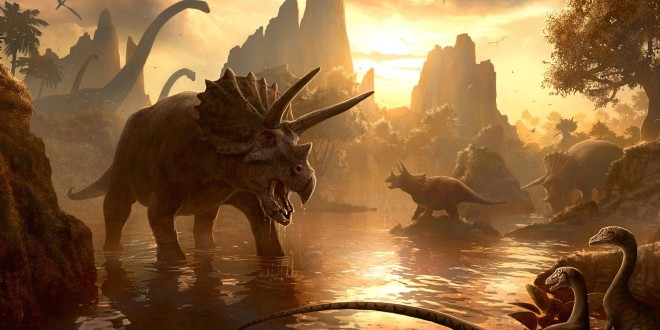
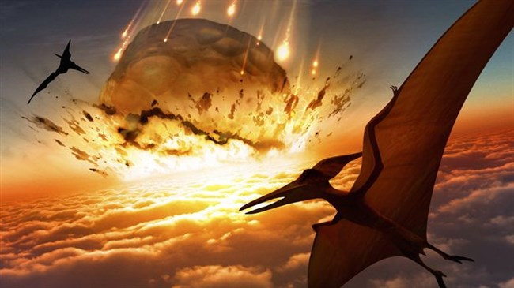

The Mesozoic Era
Age of the Dinosaurs
 The era of the dinosaurs (also known as the mezosoic era)
began around 252 million years ago when the biggest mass extinction known as the permian-triassic (nicknamed the great dying) wiped out almost every species on earth. When the Mesozioc era began, the worlds
continents were all connected into a super continent which has multiple names but is most commonly addressed as pangea or pangaea. Pangea is one of the main
reasons why the dinosaurs and even species nowadays are scattered around the world. The Mesozoic era contains three different periods within it, and also
has connection to three of the five mass exctinctions in Earths history. The three periods that the mesozoic era is split into are called the Triassic, Jurassic
and Cretascious periods, with Triassic being the shortest than Jurassic and Cretascious being the longest. The Reign of the dinosaurs lasted around 180
million years before they went extinct from the effects of a meteorite.
The era of the dinosaurs (also known as the mezosoic era)
began around 252 million years ago when the biggest mass extinction known as the permian-triassic (nicknamed the great dying) wiped out almost every species on earth. When the Mesozioc era began, the worlds
continents were all connected into a super continent which has multiple names but is most commonly addressed as pangea or pangaea. Pangea is one of the main
reasons why the dinosaurs and even species nowadays are scattered around the world. The Mesozoic era contains three different periods within it, and also
has connection to three of the five mass exctinctions in Earths history. The three periods that the mesozoic era is split into are called the Triassic, Jurassic
and Cretascious periods, with Triassic being the shortest than Jurassic and Cretascious being the longest. The Reign of the dinosaurs lasted around 180
million years before they went extinct from the effects of a meteorite.
The Start of the Dinosaurs
Permian-Triassic Extinction
 The Beginning of the Mesozioc era
initially started when the third mass extinction wiped out almost every species on earth. The Permian-Triassic extinction(GreatDying) have many
predictions of what caused it ranging from a volcanic eruption, to a meteorite ranging from 6-12km in diamater. Either method you choose to believe
in, it eventually caused a massive amount of sulfur to leak into the air and eventually mix with the air to make Sulfur Oxide or as nicknamed
Acid rain, when it fell, the acidic part would damage the plant life on earth and eventually cause the earths plant life to go nearly
exctinct. The length of the Great Dying isn't exactly one hundred percent as some people believe in different time amounts ranging from 15 million years
long, to 200,000 year long and most of the exctinctions happening within the first 20,000 years of the extinction.
The Beginning of the Mesozioc era
initially started when the third mass extinction wiped out almost every species on earth. The Permian-Triassic extinction(GreatDying) have many
predictions of what caused it ranging from a volcanic eruption, to a meteorite ranging from 6-12km in diamater. Either method you choose to believe
in, it eventually caused a massive amount of sulfur to leak into the air and eventually mix with the air to make Sulfur Oxide or as nicknamed
Acid rain, when it fell, the acidic part would damage the plant life on earth and eventually cause the earths plant life to go nearly
exctinct. The length of the Great Dying isn't exactly one hundred percent as some people believe in different time amounts ranging from 15 million years
long, to 200,000 year long and most of the exctinctions happening within the first 20,000 years of the extinction.

The Extinctions have multiple theories which were mentioned in the above paragraph, but each of them has a more in depth story. The 'theory' which involves the the volcanic eruption is the one which is mainly beleived by the public, the theory involves a catastrophicly massive volcanic eruption which due to the super continent pangea being the only source of land cause the volcanic eruption to spread all over the 'earth'. The volcanic eruption was so massive and lasting for thousands of years due to its gathering of volcanic magma inside the earths mantle. While the volcanic eruption was in play, it was releasing sulfur into the air and eventually over thousands of years mixed with the atmospheres water and created Acid rain which when was to make contact with plant life, it would damage it and if enough was to hit the plant, it would die, this went on for thousands (or millions) of years and eventually killed of most herbivores and in relation killed of the carnivores and omnivores. There were also some other side effects involving global warming, etc, but the main problem was the exctinction of most species on earth.
The Mesozoic Periods
Triassic Period
 The triassic period was the first period of the mesozoic era and was mainly based on the revival of the planets
flora and fauna caused by the massive destruction of life from the Permian-Triassic Extinction. The triassic period was the shortest period of the
mesozoic era, only lasting for about 51 million years. The triassic period played a major part in the earths history because half of its duration was
of the reconstruction of the earths atmosphere and life. The period ended with another mass exctinction which killed around 30-40 percent of life on
earth, this caused the dinosaurs to proclaim their dominance during the jurassic and cretaceous periods. The Triassic periods exctinction that divides
it with the jurassic period cause the earths land the start to divide itself into different parts, this is the reason that the dinosaurs and even species
in the twenty first century are all over the world, because species walked onto different land and started to slowly move away from eachother due to the
splitting of pangea.
The triassic period was the first period of the mesozoic era and was mainly based on the revival of the planets
flora and fauna caused by the massive destruction of life from the Permian-Triassic Extinction. The triassic period was the shortest period of the
mesozoic era, only lasting for about 51 million years. The triassic period played a major part in the earths history because half of its duration was
of the reconstruction of the earths atmosphere and life. The period ended with another mass exctinction which killed around 30-40 percent of life on
earth, this caused the dinosaurs to proclaim their dominance during the jurassic and cretaceous periods. The Triassic periods exctinction that divides
it with the jurassic period cause the earths land the start to divide itself into different parts, this is the reason that the dinosaurs and even species
in the twenty first century are all over the world, because species walked onto different land and started to slowly move away from eachother due to the
splitting of pangea.
Jurassic Period
 The Jurassic period
was the second shortest and longest out of the three periods within the mesozoic era. The Jurassic period is the most known period of the mesozoic era becuase of how much it is used in the media. The period was the initial time when the
dinosaurs ruled the earth because of the exctinction that killed around 30 percent of the earths species which left the dinosaurs to dominate the earth without any
interfierance. This period was when the super-continent, pangea, started to split up, it split into two major landforms, a northern one by the name of Laurasia,
and the southern called Gondwana. Although the Jurassic Period began with a mass exctinction, it included 2 exctinction events with one of around the
beginning of the period and the other near the end, neather of these exctinctions were as impacting to make it one of the 5 mass extinctions.The Jurassic period had
more land mammals than ocean mammals but the amount of either didn't compare to the next period of the mesozoic era, the cretaceous period.
The Jurassic period
was the second shortest and longest out of the three periods within the mesozoic era. The Jurassic period is the most known period of the mesozoic era becuase of how much it is used in the media. The period was the initial time when the
dinosaurs ruled the earth because of the exctinction that killed around 30 percent of the earths species which left the dinosaurs to dominate the earth without any
interfierance. This period was when the super-continent, pangea, started to split up, it split into two major landforms, a northern one by the name of Laurasia,
and the southern called Gondwana. Although the Jurassic Period began with a mass exctinction, it included 2 exctinction events with one of around the
beginning of the period and the other near the end, neather of these exctinctions were as impacting to make it one of the 5 mass extinctions.The Jurassic period had
more land mammals than ocean mammals but the amount of either didn't compare to the next period of the mesozoic era, the cretaceous period.
Cretaceous Period
 The Cretaceous period was the last and the longest period within the mesozoic era, the cretaceous period isn't the most known period but it contains the most commonly known dinosaurs such as the velociraptor, Tyrannosaurus rex, triceratops, etc. The cretaceous period contained the highest amount of dinosaurs to exist inside its timeline, the period lasted for around 79 million years and held account to new plants, sea life, land life and a change in the planets climate, although during the period certain species of dinosaurs went extinct from different problems ranging from climate to their diet, an example of this was the spinosauras who was an icthyophagous (a fish eater) that was primary populated in north-africa, the species went extinct because of the climate change, the heat rose and so the oceans near africa dried out and spinosauras could'nt eat so the species eventually died out from hunger and other reasons. The cretaceous period was the beginning of when the world started to split into the different continents we known today, although they weren't as far away as they are now, they were still seperated from pangea and even the two major continents: Gondwana and Laurasia.
Extinction of the Dinosaurs
Cretaceous-Paleogene Extinction
The Cretaceous-Paleogene extinction was the 5th and the latest mass extinctions to happen on the earth and it happened 66 million years ago and sparked the end of the dinosaurs. There are different theories but the main theory and the most popular theory is the asteroid theory. The theory involves an Asteroid with the diameter of between 10-15km wide hitting near the edge of what is now known as mexico. The impact of the Asteroid killed everything that was in the direct impact of the asteroid and sent a shockwave around the world that killed all the plant on the earth kind of like the permian-triassic extinction but more immediate. When the plants died the kiling started, the first things to die was the big herbivores because they couldn't fill their diets and died quicker than the smaller herbivores, and because of this the carnivores had plenty of food and they survived longed, but they started to run out of meat because they were constantly eating and they started to die in the size pattern just like the herbivores. The main difference between life and death in the exctinction was the species size, any species that weighed 25 kilograms or less was able to obey their diet and survive through the extinction.